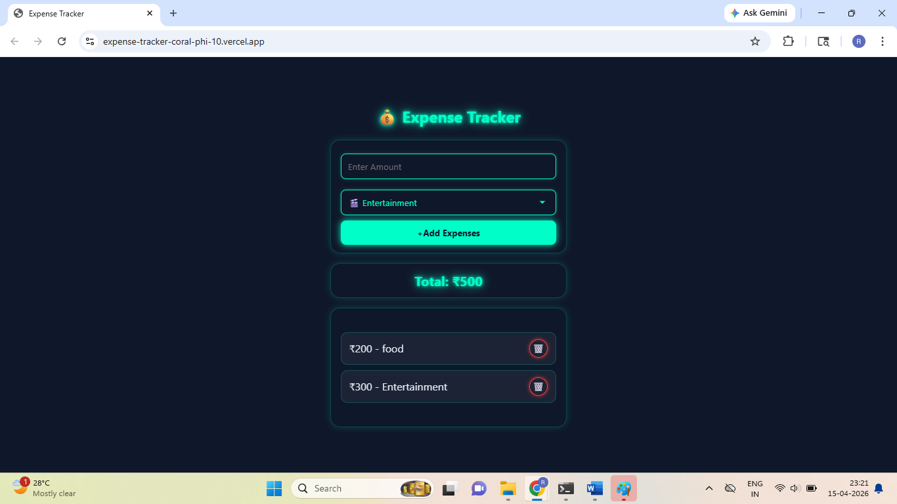

About
I’m a Full Stack Developer with 3.8 years of experience building and maintaining web applications. Previously at Aissel Technologies, I worked across both frontend and backend development using technologies like HTML, CSS, JavaScript, PHP, Bootstrap, AJAX, and MySQL.
After taking a planned career break due to family responsibilities and maternity, I’m now actively re-entering the workforce with a strong focus on modern frontend development. Currently, I’m working with HTML, CSS, JavaScript, and learning React while building hands-on projects to strengthen my practical skills.
I’m also completing a 30-day GitHub challenge, consistently creating projects to improve problem-solving, consistency, and development workflow. Outside of coding, I enjoy drawing, art, and listening to music, which helps me stay creative and curious.
Experience
Full Stack Developer · Aissel Technologies
Developed and maintained responsive, user-focused web interfaces using HTML, CSS, Bootstrap, and JavaScript, ensuring consistency across devices. Built and optimized 8+ landing pages for marketing campaigns with a focus on performance and usability.
Improved user experience by implementing AJAX-based dynamic content loading for faster and smoother interactions. Worked on backend development using PHP and CodeIgniter, ensuring seamless integration with frontend systems.
Wrote and optimized MySQL queries to improve data handling efficiency and overall application performance.
Projects
